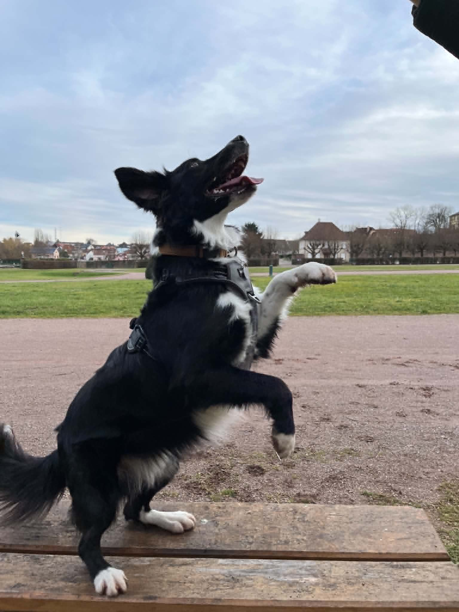
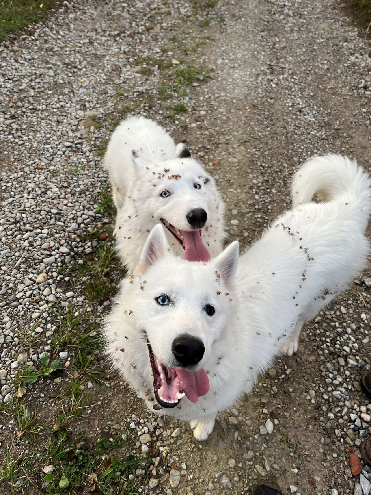
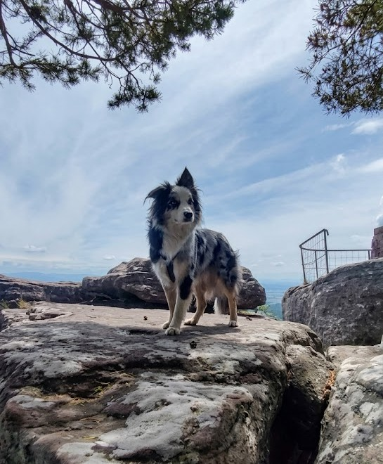

Tanto : L'origine de Safe Dogs
Tanto est un Border Collie de trois ans, l'exemple même de l'équilibre entre le travail et la tendresse. C'est un chien parfaitement obéissant, qui fait preuve d'une écoute exemplaire et d'une intelligence vive dans toutes les situations.
Un sportif passionné : Tant sur les sentiers qu'en pleine action, Tanto est un athlète complet. Doté d'une endurance exceptionnelle, il excelle dans toutes les activités physiques. Cette énergie est entièrement focalisée sur une obsession : les balles et les bâtons. Rien ne le rend plus heureux que de rapporter ses jouets, une activité qu'il pratique avec une précision et un enthousiasme inépuisables. Il est toujours prêt à l'action et ne se lasse jamais de partager un moment de jeu intense.
Un cœur tendre : Malgré son tempérament vif et son profil de grand sportif, Tanto est un compagnon extrêmement câlin. Une fois les activités terminées, il sait parfaitement se montrer doux et affectueux, cherchant constamment le contact avec ses humains pour partager des moments de complicité calme.

Névé et Ubac : Les inséparables de la Garderie Safe Dogs
Névé et Ubac sont deux frères de sang inséparables, issus de ce croisement unique que sont les Samsky. Si leur pelage blanc éclatant et leur morphologie athlétique les rendent facilement reconnaissables, c'est dans leur regard et leur tempérament que réside toute leur singularité.
Ubac, l'électron libre aux yeux bleu saphir : Véritable tempête d'énergie, Ubac est l'aventurier du duo. Il se distingue par ses deux yeux bleu azur, aussi intenses que son envie d'explorer le monde. C'est un esprit libre, toujours en mouvement, prêt à transformer la moindre sortie en une véritable épopée. Sa nature curieuse et son tempérament joueur font de lui l'étincelle qui pousse son frère vers de nouvelles découvertes.
Névé, le charmeur à la loyauté fidèle : Miroir de son frère, Névé captive par la fascination de son regard vairon : un œil bleu intense et un œil marron profond. Plus posé et réfléchi, Névé incarne une présence douce et profondément protectrice. C’est le compagnon idéal qui apporte l'équilibre, offrant une loyauté infaillible et une sérénité rassurante à ceux qui l’entourent.

Tao : Le charmeur indomptable
Tao est un jeune Berger Australien croisé Border Collie d'un an, un véritable concentré d'aventure et de vitalité. Avec sa « tête de tombeur » et son oreille tombante caractéristique, il possède un regard irrésistible qui lui permet d'attirer l'attention en un instant.
Un caractère espiègle et débordant d'énergie : Tao est un moteur perpétuel de bonne humeur. Son tempérament est un véritable feu d'artifice : il ne connaît pas l'ennui et possède ce côté malicieux qui le pousse à tester les limites. S'il n'est pas toujours le plus obéissant, c'est parce qu'il privilégie son instinct de découverte et son enthousiasme débordant.
Un compagnon profondément affectueux : Derrière son tempérament énergique et son caractère bien trempé, Tao est une boule d'affection. Il aime intensément ses humains et sait se montrer extrêmement doux lorsqu'il s'agit de partager des moments de complicité.